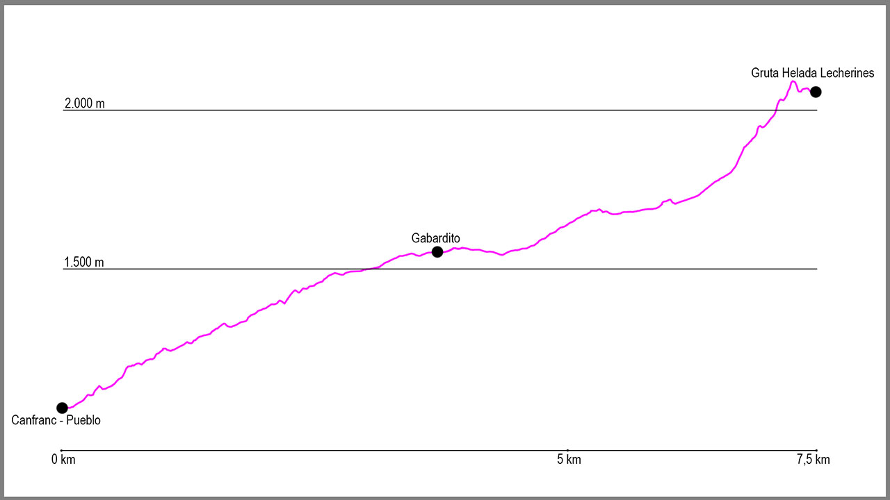

Nuestro recorrido comienza al borde de la carretera N-330 en Canfranc-Pueblo, justo en la parada de autobús en dirección Astún-Jaca. En este punto cogeremos un camino que parte desde una rampa sobre un muro de hormigón que nos conducirá por el barranco de Los Meses.
El inicio del camino es muy cómodo. El sendero asciende primero por el vivero de Los Meses para después cruzar por un dique el barranco y dejarnos desde ese momento en su margen derecha. La subida, muy tendida en todo momento, nos llevará a la fuente la Pajeta, para poco después dejarnos en la pista que nos conducirá al punto de retorno. Cuando llegamos a ella, tenemos que girar a nuestra derecha, ascendiendo desde este momento por la pista forestal hasta Gabardito. A mitad de este tramo de subida encontraremos la fuente de Los Abetazos, lugar donde podemos tomar agua.
Una vez llegamos a la pradera de Gabardito, pasaremos por debajo de un enorme árbol y en ese momento seguiremos las marcas de GR (blancas y rojas) hasta llegar al refugio forestal de Gabardito. Justo aquí, continuaremos un poco más la subida para llegar a un punto donde la GR11 gira a nuestra derecha, donde baja para cruzar un barranco. Lo cruzaremos y desde este punto el camino asciende cómodamente y sin ninguna complicación durante varios kilómetros. Simplemente tendremos que seguir la traza y las marcas de GR hasta llegar a la Majada de Lecherines.
Llegados a este punto solo nos quedará la última subida. Tras cruzar el barranco del Campón y bajar hasta la majada, los pies nos llevarán hacia la derecha, pero nosotros nos dirigiremos hacia el refugio que veremos en el llano, donde podremos coger agua en un manantial en la parte norte del edificio. Una vez hayamos repostado buscaremos la canal que en dirección noreste aparecerá delante de nosotros. Una vez en la base de la misma, la pendiente es cada vez más empinada. Ascenderemos por ella, por la traza del sendero, hasta llegar a una pedrera y a un punto donde se ensancha la canal. Aquí dos variantes saldrán de nosotros, pero tomaremos el camino y la canal de la izquierda, en dirección norte, para tras ascender el primer tramo llegar a dar vista a una zona de piedras y hierba.
En este punto, solo nos quedará seguir este pequeño valle nuevo en dirección norte pegados a la roca de la derecha, para tras unos 200 metros llegar a la puerta de la Gruta Helada de Lecherines, a nuestra derecha.
